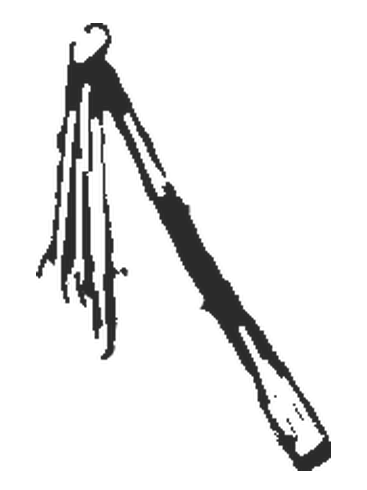
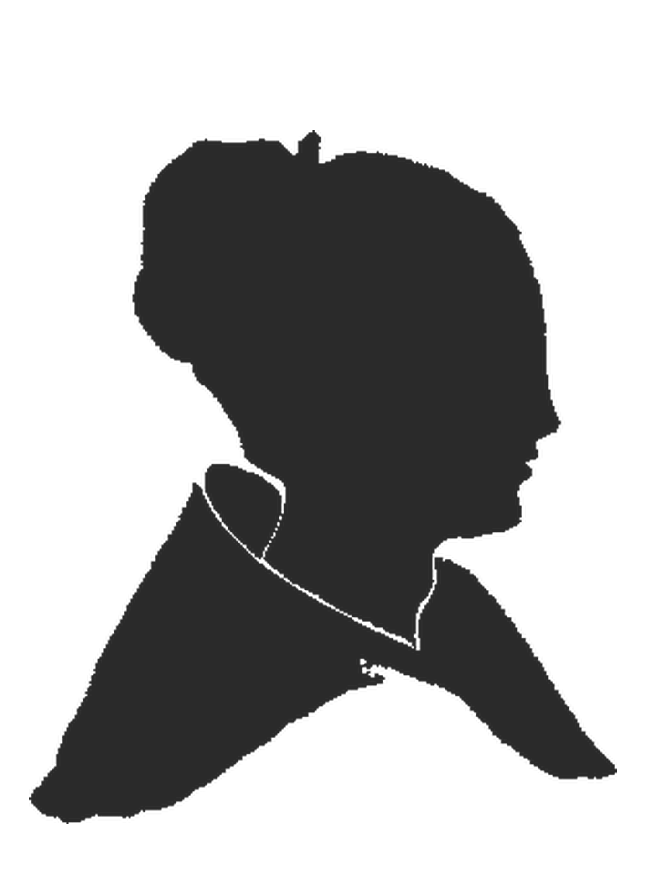
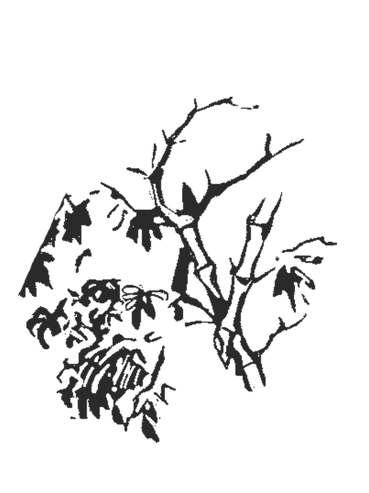
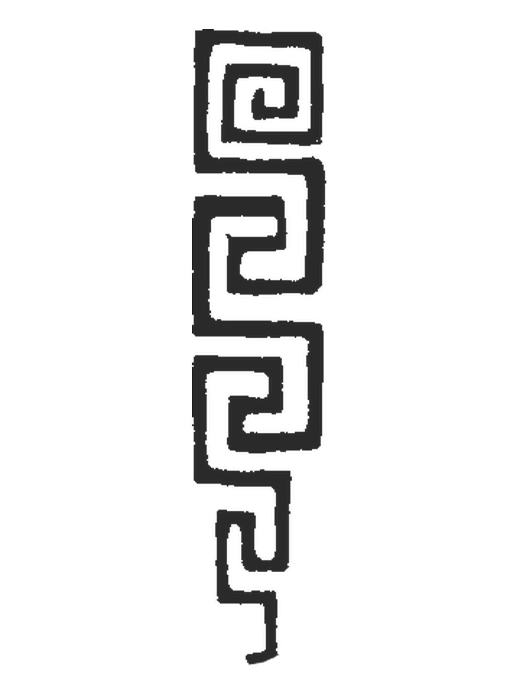
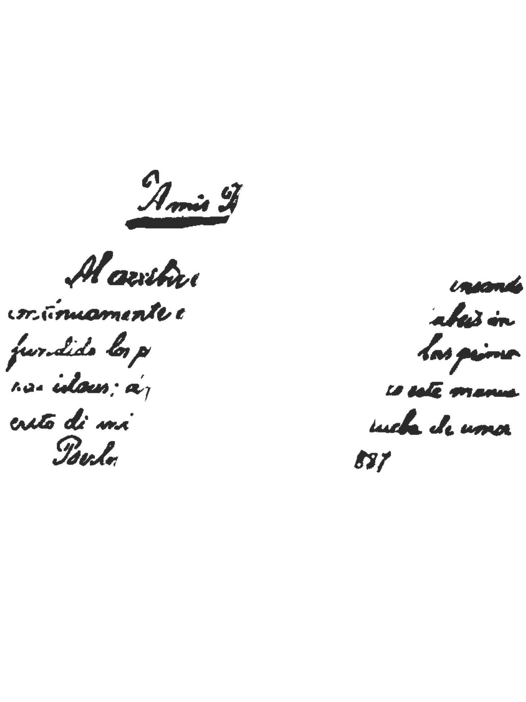

Alferez’s Scourge
Represents colonial brutality, fear, and power enforced through violence. In Noli, it reflects how the Guardia Civil punished innocent Filipinos to maintain control.

Woman (Maria Clara)
Symbol of purity, dignity, and sacrifice of Filipina women. Mirrors Maria Clara — whose love, virtue, and suffering represent the nation.

Bamboo
Filipino resilience; bending but never breaking. Just like Elias and the common people who endured injustice yet hoped for freedom.

Chains
Represents oppression and imprisonment — physical, social, and spiritual. Symbolizes Don Rafael’s wrongful imprisonment and the Filipino nation's bondage.

Cross
Faith turned into a tool of control by abusive clergy. Padre Damaso and Padre Salvi used religion to manipulate and dominate Filipinos.
Crown
Political power and colonial authority. Represents Spain’s monarchy and the elite class controlling society and crushing reformists like Ibarra.
Guardia Civil
Symbol of corruption, abuse, and injustice in the colonial system. They terrorized citizens, framed innocent people, and oppressed the poor — like Sisa and her sons.

Laurel & Pomelo
Laurel = honor & triumph; Pomelo = bitterness & tragedy. Represents bittersweet victory — hope through suffering, like Ibarra’s dream of reform.

Maria Clara’s Locket
Symbol of love, identity, and truth. Holds her past & secrets — revealing she is Padre Damaso’s daughter and not truly free.

Maze
Represents the confusing path to justice in society. Ibarra’s struggles mirror the impossible social maze under Spanish rule.

Secret Dedication
Rizal's silent tribute to his parents and all Filipinos who suffered injustice. It shows his mission: awaken the Filipino spirit.

Sunflower
Hope, youth, and enlightenment — always turning to light. Much like Rizal believed the Filipino youth would bring the future.
Teacher’s Whip
Oppressive education system under friars. Symbol of forced obedience rather than learning — like the abuse suffered by Crispin and Basilio.